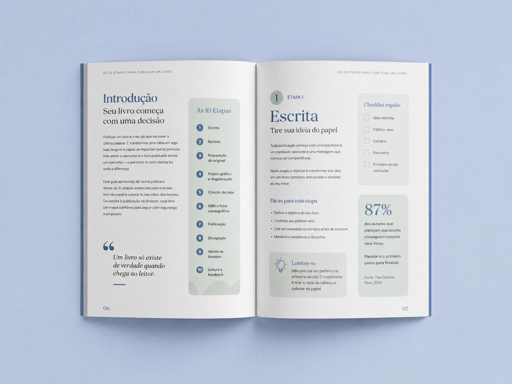
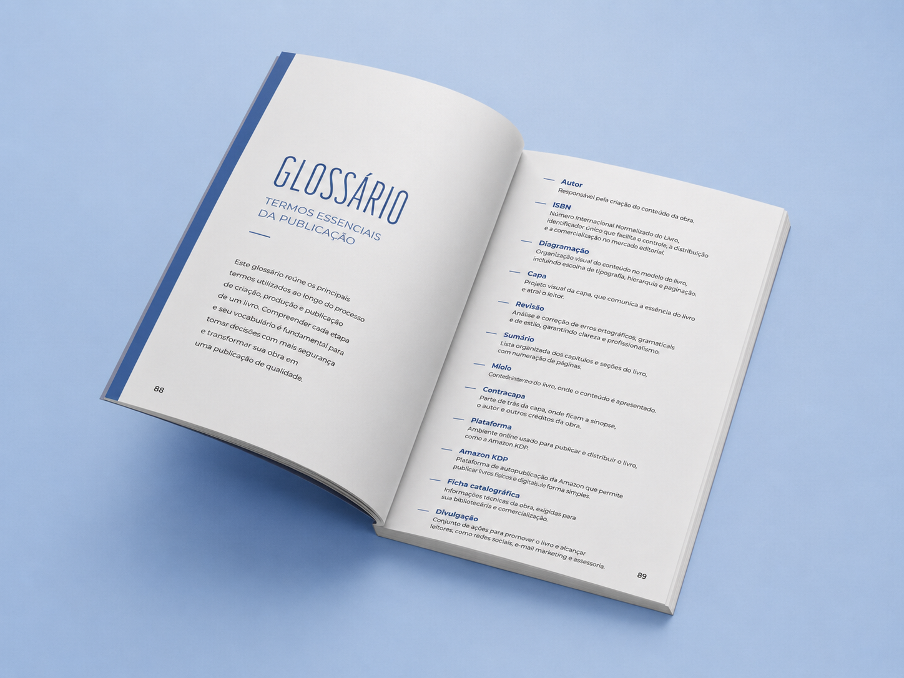
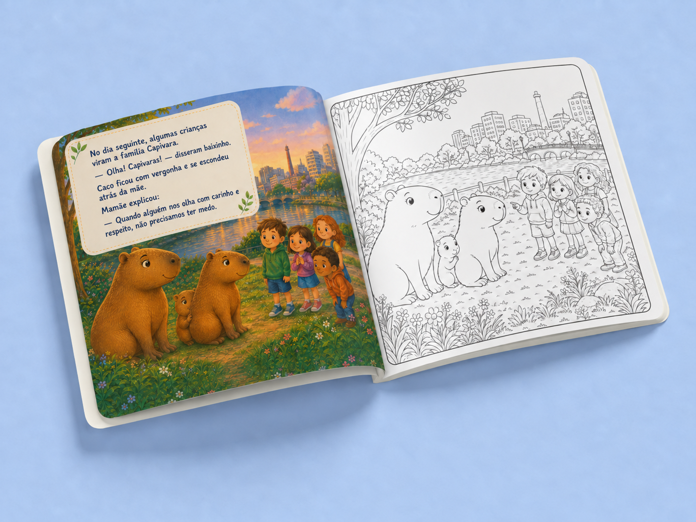

Design editorial para quem tem uma história
Seu livro merece
ser escolhido.
Capas que fazem a primeira impressão ficar. Premades com personalidade. Diagramação que convida a continuar lendo.
Portfólio selecionado
Cada história
pede uma pele.
Uma seleção de capas reais e uma amostra de diagramação, criadas com direção visual própria para cada história.



O que posso fazer pelo seu livro
Do arquivo à
primeira impressão.
Você escolhe por onde começar. A gente constrói um livro que parece seu — e parece profissional.
Direção visual, conceito, composição, tipografia e arquivos finais preparados para e-book e impressão.
Quero criar minha capa ↗Opções exclusivas que recebem seu título, nome de autora ou autor e os ajustes combinados.
Quero ver premades ↗Organização de miolo, estilos, capítulos, páginas e elementos gráficos para e-book ou impresso.
Quero diagramar meu livro ↗Seu projeto, sem mistério
Um processo
com espaço para você.
- 01Você me conta
Gênero, público, referências e tudo o que seu livro precisa fazer sentir.
- 02Eu proponho
Direção visual e proposta sob medida para a etapa que você precisa.
- 03A criação acontece
Você acompanha de perto, com ajustes e decisões bem orientadas.
- 04Seu livro ganha forma
Arquivos organizados e prontos para a sua próxima publicação.
Vamos conversar sobre seu livro?